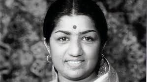

Indian playback singer and occasional music composer

lata mangeshkar (1942–2022)
A Short Biography of lata mangeshkar
Lata Mangeshkar was born in Indore on September 28, 1929
and became, quite simply, the most popular playback singer in Bollywood's history.
he sung for over 50 years for actresses from Nargis to Preity Zinta, as well as recorded albums of all kinds (ghazals, pop,
Until the 1991 edition, when her entry disappeared, the Guinness Book of World
Records listed her as the most-recorded artist in the world with not less than 30,000 solo,
duet,and chorus-backed songs recorded in 20 Indian languages between 948 and 1987.
Today that number may have reached 40,000!
She was born the daughter of Dinanath Mangeshkar, the owner of a theater company and
a reputed classical singer in his own right. He started giving Lata singing lessons from the
age of five, and she also studied with renowned singers Aman Ali Khan Sahib and Amanat
Khan. Even at a young age she displayed a God-given musical gift and could master vocal
exercises the first time.
Ironically, for someone of her stature, she made her entry into Bollywood at the wrong
time - around the 1940s, when bass singers with heavily nasal voices, such as Noor Jehan>
I've always loved life, irrespective of all the ups and downs that have filled my journey. Lata Mangeshkar
Read more at https://www.brainyquote.com/authors/lata-mangeshkar-quotes
----Lata Mangeshkar-----
if you have time, you should read more about this incredible human being on her
Wikipedia Entry